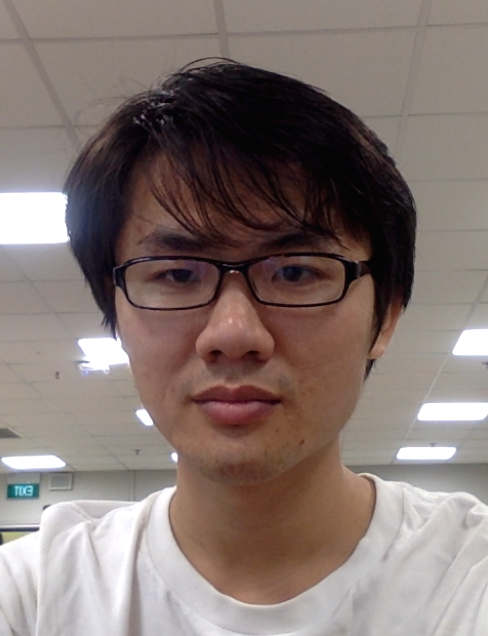

Xiaoshi Zhong (钟晓时)
|
|
|  |
|
Ph.D. Student, 2017 - Present
School of Computer Science and Engineering
Nanyang Technological University, Singapore
Email: xszhong at ntu.edu.sg
|
|
|
Education
|
- Nanyang Technological University, Singapore
- Ph.D. Student, Computer Science and Engineering
Advisor: Prof. Erik Cambria
- China Agricutural University, China
- M.Eng., Computer Science and Technology
- Beihang University, China
- B.Eng., Computer Science and Engineering
|
|
Research Interests
|
My interests get involved in the three elements: imagination, logic, and language.
Now I focus on data analytics and computational linguistics. I also like probability and statistics.
|
|
|
Publications
|
| 2017 - Present |
-
Xiaoshi Zhong and Erik Cambria.
Time Expression Recognition Using a Constituent-based Tagging Scheme.
In Proceedings of the 27th International World Wide Web Conference (WWW), 2018.
Research track paper and the acceptance rate is 14.8% (171/1155).
[pdf]
-
Xiaoshi Zhong, Aixin Sun, and Erik Cambria.
Time Expression Analysis and Recognition Using Syntactic Token Types and General Heuristic Rules.
In Proceedings of the 55th Annual Meeting of the Association for Computational Linguistics (ACL), pages 420-429, 2017.
Full oral paper and the full oral rate is 15.6% (117/751).
[pdf][code][slides][gratitude]
|
| 2014 - 2016 |
|
|
| 2013 and before |
-
Xiaoshi Zhong.
A Wikipedia based Hybrid Ranking Method for Taxonomic Relation Extraction.
In Proceedings of the 9th Asia Information Retrieval Societies Conference (AIRS), pages 332-343, 2013.
-
Yunqing Xia, Xiaoshi Zhong, Guoyu Tang, Junjun Wang, Qiang Zhou, Thomas Fang Zheng, Qin'an Hu, Sen Na, and Yaohai Huang.
Ranking Search Intents Underlying a Query.
In Proceedings of the 18th Conference on Applications of Natural Language to Information Systems (NLDB), pages 266-271, 2013.
Short paper.
-
Xiaoshi Zhong and Ping Ding.
Toward Domain Adaptation of Chinese Word Segmentation based on Semi-supervised Learning.
In International Journal of Advanced Intelligence (IJAI), 5(1): 40-55, 2013.
-
Xiaoshi Zhong and Ying Chen.
Unsupervised Method for Subjective Lexicon Induction with News Comments.
In Journal of Computational Information Systems (JCIS), 8(3): 1071-1079, 2012.
|
|
Awards
|
-
Seed Achievement
In my Senior High School Entrance Examination, in Sanya City, I am the only one who gets full score in Math.
I achieve that full score with only the Math classes and textbooks from my primary school and junior high school.
In that year (初三那年), I encounter my head teacher of class (班主任, 教物理); she trusts me, leading me to keep staying in school and feel interesting to study.
That year changes my trajectory.
-
Hong Kong "Chong Zheng" Scholarship, 2011
|
|
Scientific Training
|
From Oct. 2013 to Jan. 2016, I work as research assistant at Hong Kong University of Science and Technology and research associate at City University of Hong Kong, both with Prof. Jeff Hong (Chair Professor).
Before trained by Jeff, I work as an engineer; after that training, I think like a scientist.
|
|
|